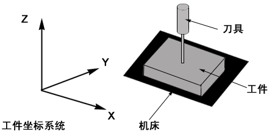
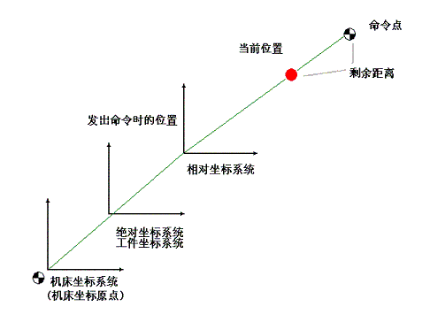

| 坐标系统 |
| 编程坐标系采用右手坐标系统。在加工期间，由于机床对工件做反向运动，坐标系统通常被改变。  |
| 坐标系统 1. 机床坐标系统 这个坐标系统用一个固定的机床的点作为其原点。在执行返回原点操作时，机床移动到此机床原点。 2. 绝对坐标系统 用户能够可建立此坐标系统。它的原点可以设置在任意位置，而它的原点以机床坐标值显示。 3. 相对坐标系统 这个坐标系统把当前的机床位置当作原点，在此需要以相对值指定机床位置时使用。 4. 剩余移动距离 此功能不属于坐标系。它仅仅显示移动命令发出后目的位置与当前机床位置之间的距离。仅当各个轴的剩余距离都为 零 时，这个移动命令才完成。  |